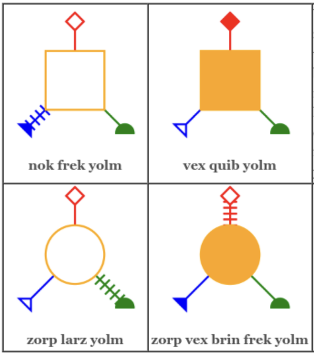
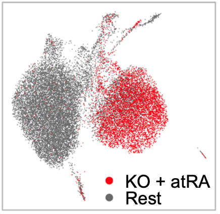

|
Will Hwang Hi! I'm a Ph.D. candidate in Computer Science at Princeton University, where I am advised by Prof. Olga Russakovsky. My research interest lies in multimodal learning, particularly in the intersection of computer vision and natural language processing. I am currently working on applying reinforcement learning to improve reasoning capabilities of Multimodal LLMs. I received my BS and MS at the University of Chicago. |

|
Activities
|
Research |

|
COMPACT: COMPositional Atomic-to-Complex Visual Capability Tuning
Xindi Wu*, Hee Seung Hwang*, Polina Kirichenko, Olga Russakovsky preprint We present a compositional, complexity-aware VIT data recipe to improve visual reasoning in MLLMs. |
|  |
Learning a Doubly-Exponential Number of Concepts From Few Examples
Ilia Sucholutsky, Bonan Zhao, Hee Seung Hwang, Allison Chen, Olga Russakovsky, Tom Griffiths CogSci, 2025 We present a novel minimal paradigm that explores how efficiently people can simultaneously learn visual and symbolic concepts. |
|  |
Nuclear receptor coregulator NRIP1 R448G modulates T cell gut homing to control intestinal inflammation
Xiangjun Chen, Hee Seung Hwang, Bihua Li, Yanhua Zhao, Koushik Ghosh, Lei Deng, Elizabeth A. Creasey, Orr Ashenberg, Daniel B. Graham, Ramnik J. Xavier PNAS, 122, 2025 We show that NRIP1 R448G leads to intestinal inflammation by activating T cell gut homing and inflammatory cytokine production. |
Teaching
|
|
Credit: Jon Baron. |